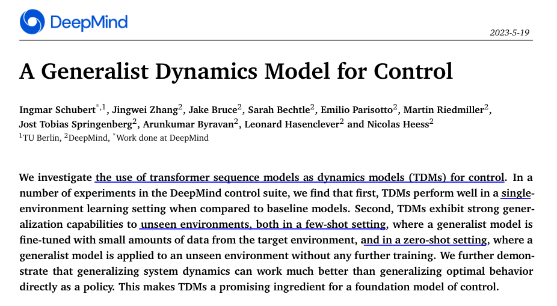

📃A Generalist Dynamics Model for Control
이번 포스팅은 DeepMind에서 발표된 A Generalist Dynamics Model for Control 논문을 읽고 정리한 내용입니다. NLP 분야에서 유명한 Transformer 아키텍쳐가 Control 분야에서 어떻게 사용되고 그 효과가 어떤지에 대해 조사한 논문으로 요즘처럼 강력한 베이스 모델인 Transformer가 모든 분야에 뻗어나가고 있는 이때에 Control에서는 어떤 영향력을 가지고 사용되고 있는지 알아보는게 정말 흥미로웠기 때문에 리뷰해보게 되었습니다.

1 Introduction
로봇 공학 연구의 중요한 목표는 복잡한 환경에서 다양한 목표를 수행할 수 있는 에이전트를 만드는 것입니다. 인공지능의 발전과 더불어 복잡한 작업에 대해 유연하고 성공적인 동작들을 보여주지만, 학습을 위한 많은 양의 데이터가 필요하고 한 가지 task 만 잘하는 specialist 에이전트가 됩니다. 로봇 공학에서 현재의 최첨단 접근법 중 많은 부분이 부족한 특징은 일반성입니다: 이전의 경험을 보이지 않은 환경에 일반화할 수 있는 능력입니다.
요즘에는 대량의 데이터로 큰 모델을 훈련시키는 것이 언어 모델링 등과 같은 영역에서 일반성에 큰 도약을 가능하게 했습니다. 이로 인해 큰 모델을 사용하여 구체화된 에이전트의 일반성을 향상시키는 데 대한 관심이 생겼습니다. 이는 고수준 의사 결정에 언어 모델을 사용하는 방법(Driess et al. 2023; Huang et al. 2023)이나 큰 모델 자체를 사용하여 제어 지시를 출력하는 방법(Reed et al. 2022) 중 하나로 이어지기도 합니다. 본 연구는 후자의 접근법, 구체적으로는 transformer sequence 모델을 제어에 사용하는 방법에 초점을 맞추고 있습니다. 대부분의 이전 연구는 정책 학습을 위해 transformers를 사용하는 것을 고려하지만, 우리는 이를 동역학 모델로 사용하는 것을 연구하며, 이를 transformer 동역학 모델(TDMs)이라고 합니다. 전통적으로 명시적인 동역학 모델을 학습하고 제어에 사용하는 동기는 동역학이 목표와 독립적이기 때문입니다. 따라서 학습된 동역학 모델은 다중 목표에 대한 최적 동작을 생성하기 위해 재사용될 수 있습니다. 본 연구에서는 추가적인 장점을 증명합니다: 특정 상황에서 동역학 모델은 동작 정책보다 보이지 않은 환경에 대해 더 좋은 일반화 능력을 가지므로, 모델에 기반한 종합적인 에이전트를 생성하여 모델 없이 학습한 에이전트보다 더 좋은 일반화를 할 수 있습니다.
논문에서 TDMs의 두 가지 다른 측면을 살펴봅니다. 첫째로, 우리는 전문가 모델 학습 환경, 즉 대상 환경과의 상호작용으로 얻은 데이터를 사용하여 모델을 학습할 때 TDMs의 성능이 기준선에 비해 더 좋음을 증명합니다. 둘째로, 우리는 TDMs가 환경 간에 강력하게 일반화되는 것을 보여줍니다. 특히, 우리는 종합적인 TDM이 보이지 않은 환경에 대한 몇 가지 시도 또는 제로샷(제로 샷) 일반화에 사용될 수 있다는 것을 보여줍니다.
- We use transformer sequence models as TDMs for control, and we describe a simple setup to evaluate learned models in an MPC loop together with a random shooting planner.
- In the specialist setting, i.e., when trained on transition data from the target environment, we observe that TDMs are accurate, and outperform baseline models (see section 5.1).
- In the generalist setting, i.e., when trained on transition data from environments different from the target environment, we find strong generalization capabilities, both few-shot and zero-shot:
- In a few-shot setting (fine-tuning a generalist), we observe strong generalization effects, which can be exploited to obtain a good dynamics model given limited data. In our experiments, this approach surpasses even lightweight specialist models (see section 5.2.1).
- In a zero-shot setting, we observe that the generalist TDM generalizes substantially better than its generalist policy counterpart (see section 5.2.2).
2 Background
2.1 Modelling trajectory data with transformers
도입 부분에서 파악했던 Recovery task의 특성과 pose들 간의 거리를 위한 새로운 metric의 필요성을 motivation으로 아래와 같은 contribution을 파악해볼 수 있습니다.
Euclidean distance보다 제어적인 측면에서 pose들 간의 거리 metric이 될 수 있는 Accessibility 를 제안
Accessibility를 기반으로 강화학습을 효율적으로 할 수 있도록(State Space 탐색을 잘하도록) Initial State를 정할 수 있는 K-Access 알고리즘을 제안
2.2 Model Predictive Control (MPC)
3 Method
Overview

전체적인 과정은 다음과 같이 크게 4단계로 진행됩니다.
- Sampling Static Poses: 전복된 정적 자세를 샘플링합니다.
- Estimating Accessibility Values: 샘플링된 전복 자세들 간의 거리 metric인 Accessibility Matrix를 계산합니다.
- Clustering: 측정한 Accessibility를 기반으로 Initial state들을 클러스터링합니다.
- Learning: Cluster의 Centroid pose를 initial state로 Recovery(혹은 Backflip)을 강화학습 알고리즘으로 학습합니다.
3.1 MPC
전복된 다양한 자세들을 샘플링하기 위해서 로봇의 base frame의 roll, pitch 각도를 일정 범위에서 랜덤하게 샘플링하고 12개의 joint position도 로봇의 configuration을 고려하여 upper/lower limit range에 있는 각도로 자세를 set해서 전복된 자세를 만듭니다. (이때 yaw 방향은 flat terrain에선 의미가 없기 때문에 0으로 셋팅합니다.) 샘플링된 자세로 pose를 set 했을 때 self-collision을 확인한 뒤 self-collision이 되지 않은 자세 2.4k개를 sampling 합니다.

3.2 Training Setups
3.3 Environments
Clustering Analysis


따라서 이 부분은 RBF 커널에 대해 공부하고 나서 제가 생각한 이유를 덧붙이겠습니다. RBF 커널은 기본적으로 Gaussian Distribution 모습으로 target value와 data 간의 radial한 거리 가중치를 주게 되는데, linear sum과 비교했을 때 무한 차원 영역에서 매우 멀리 떨어져 있는 data로부터 영향을 덜 받을 수 있는 장점을 가지고 있습니다. 따라서 Reward를 계산하는 데에 RBF 커널을 통해 계산한 의도는 Maximization해야 하는 Reward term들을 단순히 Linear sum하는 것보다 여러 카테고리의 Reward target 값들에 민감하게 반응할 수 있는 정도를 \alpha값(Slide에서는 \gamma로 표현)을 이용하여 학습의 좋은 지표가 될 수 있는 Reward space를 설계한 것으로 보입니다.
Reward Term에서 사용된 Symbol의 의미가 궁금하신 분들은 아래 table을 확인해주세요.
Symbols of Reward Terms for DRL

Other Tasks - Backflip
해당 논문에서는 Recovery 뿐만 아니라 Locomotion 보다 더 다이나믹한 모션도 학습하는 것을 보여주기 위해 Backflip 학습도 K-Accessibility 알고리즘을 이용하여 학습을 진행하였습니다. (이전에 리뷰했던 WASABI 논문에서도 다이나믹한 모션 4가지 중 하나를 Backflip으로 학습 결과를 보여주었던 것과 같은 맥락으로 해당 모션 Task를 설정했다고 보시면 됩니다.)
4 Experiments